배가 걸리는 로버, 강화학습으로 들어 올리기
한 줄 요약 — 서스펜션을 고정한 VIPER는 30° 경사 정상에서 차체 하부 돌출부가 모서리에 걸려 멈췄습니다. PPO로 서스펜션 4축(+바퀴 속도)을 제어하자 30°를 100 % 넘었고, 35°에서는 차체 높이가, 40° 이상에서는 바퀴 마찰이 한계를 정했습니다.
- 30° 등판 성공률: 고정 서스펜션 0.8 % → PPO 100 % (경사 에피소드 832개)
- 35°(동마찰 한계와 같은 각도): 시험 각도에 맞춰 고른 최적 고정 자세 69.2 %, PPO 관절 직접 제어 시드 4개 35.0 / 55.8 / 88.0 / 86.2 %(평균 66.2 ± 25.5 %), residual 시드 3개 평균 48.0 ± 10.0 %
- 86~88 %를 낸 두 정책은 경사에서는 앞을 숙이고, 정상에서는 최대 높이로, 정상 위에서는 다시 수평으로 자세를 바꾸는 단계별 전략을 스스로 찾았습니다. 고정 자세로는 만들 수 없는 행동입니다.
- 40°·45°: 모든 제어기 0 % — tan θ ≤ μ로 계산한 마찰 한계(동 35.0°, 정 42.0°)와 일치
- 평지 차체 기울기(p95): 관절 직접 제어 PPO 7.6° → residual 구조 1.5°
현대자동차 산학프로젝트 L-Project 달 로버 12축 HILS 시스템의 하위 연구입니다. 같은 과제에서 현대 로버 모델로 먼저 진행된 PPO 능동 서스펜션 연구를, NASA VIPER 로버 모델로 처음부터 다시 만들어 학습·검증하고 있습니다. 아래 숫자는 모두 시뮬레이터(Isaac Sim 5.0 + Isaac Lab) 안에서 잰 값이고, 정책 학습은 대부분 시드 하나 기준입니다(추가 시드 진행 중).
용어 정리
- Heave
- 네 모서리를 같이 올리고 내리는 동작. 차체 높이(지상고)를 바꿉니다. 이 노트의 “heave 1.0”은 네 관절을 모두 최대(0.35 rad ≈ 20°)로 편 자세입니다.
- Pitch
- 앞을 올리고 뒤를 내리는(또는 반대) 동작. 차체 앞뒤 기울기를 바꿉니다. 음수는 앞을 내림.
- Roll / Twist
- 좌우를 반대로 / 대각선끼리 반대로 움직이는 동작.
- 하부 돌출부
- 차체 아래 가운데에 툭 튀어나온 부분. 차체의 최저점이라 지상고(0.135 m)를 정합니다.
- High-centering
- 경사 정상 모서리에 하부 돌출부가 얹혀 바퀴가 뜨고 더 못 가는 상태. “배 걸림”.
- Residual 정책
- 미리 정한 기본 자세(offset) 위에 정책 출력을 더하는 구조. 정책 출력이 0이면 기본 자세가 됩니다.
- 커리큘럼
- 쉬운 경사(15°)에서 시작해, 정상을 넘은 환경은 더 가파른 단계로(최대 45°) 올려 보내는 학습 방식.
- Lift-off
- 바퀴 접지력이 정적 하중의 10 % 아래로 떨어진 상태. 바퀴가 사실상 떠 있는 것.
- Tilt p95
- 에피소드별 최대 차체 기울기의 95번째 백분위수. 대부분의 주행에서 이 이상 기울지 않았다는 값.
01왜 서스펜션을 학습시키나
달 표면에는 충돌구 벽, 언덕처럼 가파른 경사가 많습니다. 로버가 경사를 못 오르는 이유는 크게 두 가지입니다.
- 기하 한계 — 차체가 지형에 걸린다. 경사가 평지로 꺾이는 정상 모서리, 바위, 홈에서 차체 아랫면이 닿으면 바퀴가 떠서 추진력을 잃습니다.
- 마찰 한계 — 바퀴가 미끄러진다. 경사 방향 중력 성분이 바퀴가 낼 수 있는 최대 마찰력보다 크면 아무리 바퀴를 돌려도 올라가지 못합니다.
능동 서스펜션은 첫 번째를 줄일 수 있습니다. 차체를 들어 올리거나 앞뒤로 기울여 걸리는 부분을 피하는 겁니다. 그런데 언제 얼마나 들고 어느 쪽으로 기울여야 하는지는 지형마다 달라서 규칙으로 쓰기 어렵습니다. 그래서 강화학습(PPO)이 시행착오로 찾게 했습니다. 두 번째(마찰)는 자세로 바꿀 수 없는 물리 한계라서, 결과에서 이 둘이 어떻게 구분되는지가 중요한 관찰 포인트였습니다.
02VIPER 모델부터 다시 만들기
형상은 상용 3D 모델(TurboSquid “NASA VIPER Rover”, AgenceDeuxHuit 제작, 세분화 2단계, 삼각형 약 728만 개)을 STL → USD로 바꿔 썼습니다. 시각화용 모델이라 서스펜션이 움직이지 않고, 질량도 거의 들어가 있지 않았습니다. 학습을 시작하기 전에 고친 것들입니다.
- 4절 링크 서스펜션 — 모서리마다 위팔·아래팔과 업라이트를 조인트로 묶고, 위팔 조인트(
body_to_upper_arm_sus) 하나만 구동되게 했습니다(±20°, PD 위치 제어). 링크가 닫힌 고리가 되도록 아래팔–업라이트 조인트 하나는 articulation 트리에서 빼서(excludeFromArticulation) 루프를 닫았습니다. 조향 조인트는 업라이트에 다시 붙였습니다. - 피벗 위치 — 처음엔 부품의 바운딩 박스로 회전축을 잡았는데, 비스듬한 팔에서는 축이 보스 중심에서 2 cm 가까이 벗어났습니다. 축 근처 메시 정점에 원을 맞춰(circle fit) 실제 구멍 중심을 찾는 방식으로 바꿨습니다. 측정된 팔 길이는 위 0.224 m, 아래 0.221 m입니다.
- 좌표계 — 모델의 앞쪽이 −X여서 “앞으로 가라”가 뒤로 가는 명령이 됐습니다. 차체 프레임을 Z축으로 180° 돌리고, 차체를 기준으로 하는 모든 조인트 프레임과 바퀴 구동 방향을 다시 계산했습니다.
- 질량 — 총 450 kg(차체 350, 바퀴 15 × 4, 허브 5 × 4, 조향부 2 × 8, 업라이트 1 × 4)으로 맞췄습니다.
- 부호 — 좌우 서스펜션 관절이 거울 대칭이라, 같은 방향으로 차체를 올리려면 관절 명령 부호가 (+, −, +, −)여야 합니다(FL FR RL RR). 영상 위 서스펜션 숫자가 +와 −로 번갈아 나오는 이유입니다.
| 제원 (모델에서 측정) | 값 |
|---|---|
| 총 질량 | 450 kg |
| 바퀴 반경 | 0.305 m |
| 휠베이스 / 트랙 | 1.536 m / 1.217 m |
| 기본 자세 지상고 (하부 돌출부) | 0.135 m |
| 서스펜션 구동 범위 / 구동기 속도 제한 | ±20° (0.35 rad) / 1.0 rad/s (가정값) |
| 서스펜션 PD 게인 | kp 50 N·m/deg, kd 20, 최대 1,000 N·m |
| 중력 | 1.62 m/s² (달) |
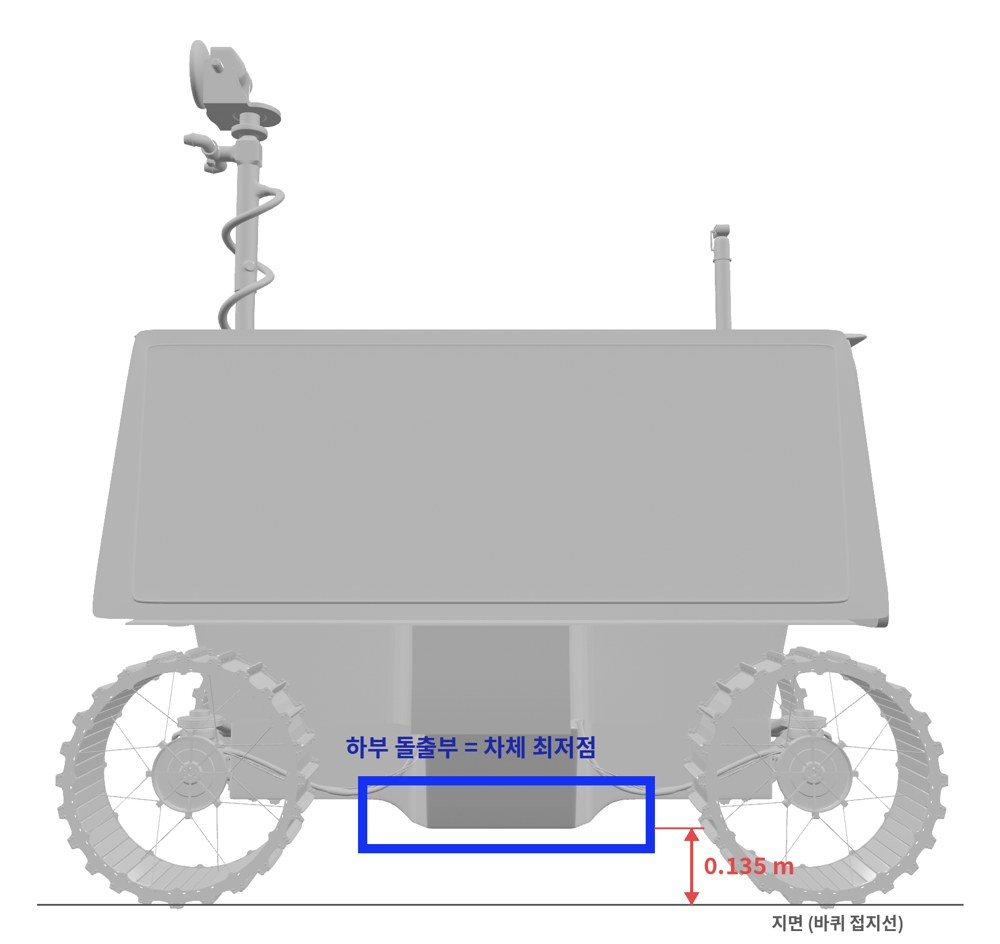
실제 VIPER와의 차이 — 이 모델은 NASA가 공개한 공학 모델이 아니라 외형을 재현한 시각화 모델입니다. NASA 발표 자료와 비교하면 질량(주행 447 kg)과 높이(약 2.5 m)는 맞지만, 바퀴 지름(NASA 50 cm / 모델 61 cm), 휠베이스·트랙(NASA 약 1.0 m·1.3 m / 모델 1.54 m·1.22 m)이 다르고, 지상고 조절 범위도 실제 VIPER(7~43 cm)가 이 모델의 서스펜션 범위(±20°, 약 6~21 cm 추정)보다 훨씬 넓습니다. ±20°는 모델에서 정한 값입니다. 그래서 이 노트의 “30°의 벽”은 실제 VIPER의 한계가 아니라 이 VIPER형 모델의 한계입니다. 지상고가 부족하면 정상에서 배가 걸리고 능동 서스펜션으로 들면 넘는다는 메커니즘 자체는 실제 VIPER가 높이 조절을 설계에 넣은 이유와 같습니다.
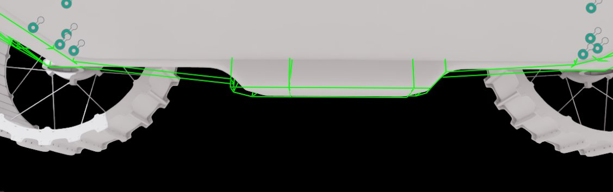
03정책 구조 — 무엇을 보고 무엇을 움직이나
행동이 관절 명령이 되기까지
바퀴 출력 4개는 바퀴 속도 배율이 됩니다. 명령 속도(0.25~0.4 m/s)에 해당하는 기준 회전수에 (1 + 0.75 a)를 곱합니다. 조향은 0으로 고정해 직진만 합니다.
서스펜션 출력은 실험에 따라 두 가지 방식으로 해석했습니다.
- 관절 직접 제어(“PPO joint”) — 출력 4개가 그대로 네 관절 목표가 됩니다.
- 모드 + residual(“PPO res.”) — 출력 4개를 heave, pitch, roll, twist 크기로 보고, 기본 자세(offset, 예: heave 1.0)에 더한 다음 행렬 M으로 네 관절 명령으로 바꿉니다. 아래 표가 M입니다(heave만 이득 1.0, 나머지는 0.5).
| 관절 명령 = | heave | pitch | roll | twist |
|---|---|---|---|---|
| FL | +1.0 | +0.5 | +0.5 | +0.5 |
| FR | −1.0 | −0.5 | +0.5 | +0.5 |
| RL | +1.0 | −0.5 | +0.5 | −0.5 |
| RR | −1.0 | +0.5 | +0.5 | −0.5 |
왜 이렇게 바꿨는지는 11장에 나옵니다. 요약하면, 관절 공간에서는 “차체를 들어 올린다”가 네 출력을 동시에 서로 다른 부호로 움직여야 하는 어려운 방향이지만, 모드 공간에서는 출력 하나(heave)입니다.
관측 — 실제 로버가 알 수 있는 값만
| actor 관측 (34) | 개수 | 비고 |
|---|---|---|
| 중력 방향 (IMU) | 3 | 차체 기울기 정보, 노이즈 0.01 |
| 각속도 (IMU) | 3 | 노이즈 0.02 |
| 동적 가속도 (IMU) | 3 | 측정값 − 정지 시 중력, g 단위 |
| 서스펜션 각도 / 각속도 / 토크 | 4 / 4 / 4 | 관절 엔코더·토크 |
| 바퀴 회전속도 | 4 | |
| 속도 명령 | 1 | 0.25~0.4 m/s |
| 직전 행동 | 8 |
critic(가치 함수)은 여기에 시뮬레이터만 아는 값 11개를 더 봅니다. 차체 선속도(3), 바퀴 접지력(4), 진행 거리(1), 진행 방향 속도(1), 차체–지면 접촉 여부(1), 지형 단계(1). 학습에만 쓰고 실제 로버에서 돌아가는 actor에는 들어가지 않는 비대칭 구조(asymmetric actor-critic)입니다.
04보상 함수
매 제어 주기(0.02 s)마다 아래 항을 더합니다. 대부분은 “빨리, 안정적으로, 걸리지 말고”를 숫자로 쓴 것입니다.
| 항 | 가중치 | 의미 |
|---|---|---|
| progress | +2.0 | 진행 방향 속도 / 명령 속도 (최대 1) |
| goal | +20 | 목표(6.5 m) 도달 시 한 번 |
| tilt | −3.0 | 차체 기울기 [rad] |
| ang_rate | −0.5 | 롤·피치 각속도² |
| lift_off | −1.0 | 뜬 바퀴 비율 |
| load_cv | −0.5 | 네 바퀴 하중의 변동계수 (고르게 누르기) |
| slip | −0.5 | 바퀴 선속도와 차체 속도의 차이 |
| body_contact | −2.0 | 차체가 지면에 닿음 |
| action_rate | −0.02 | 행동 변화량² (덜 떨리게) |
| sus_torque | −2e-6 | 서스펜션 토크² (에너지) |
| sus_pose | −0.2 | 기본 자세에서 벗어난 정도² |
| sus_limit | −0.5 → 0 | |관절각| > 0.32 rad 초과분 (11장에서 제거) |
| overspeed | −10 | 명령 속도의 1.05배 초과 |
| imu_accel | −0.2 | IMU 동적 가속도² (충격) |
| fail | −20 | 전복(롤 50° 초과 또는 기울기 85° 초과) |
05학습 설정
현대 로버 연구의 학습 코드를 VIPER에 맞게 옮겼습니다(관절 이름, 바퀴 위치, 서스펜션 부호, 접촉 센서 대상 등). 학교 서버가 아니라 개인 노트북 한 대(RTX 4060 Laptop, VRAM 8 GB)에서 학습과 평가를 모두 돌렸습니다.
| 환경 | 설정 |
|---|---|
| 시뮬레이터 | Isaac Sim 5.0 + Isaac Lab, rsl_rl PPO |
| 물리 / 제어 주기 | 5 ms / 20 ms (decimation 4) |
| 병렬 환경 / 학습 횟수 | 1,024개 / 1,500 iteration (약 2시간) |
| 경사로 | 접근 1 m + 경사 4 m + 정상 평지, 15~45° 10단계 커리큘럼, 평지 타일 20 % |
| 커리큘럼 규칙 | 정상을 넘으면 한 단계 위로, 경사 중간(3 m)도 못 가면 한 단계 아래로 |
| 도메인 랜덤화 | 바퀴 정마찰 0.75~1.0, 동마찰 0.55~0.80, 차체 질량, 출발 방향 ±10°, 속도 명령 |
| 에피소드 | 최대 40 s, 목표 6.5 m |
| PPO | 값 | PPO | 값 |
|---|---|---|---|
| rollout 길이 | 24 step | 학습률 | 5e-4 (adaptive, KL 0.01) |
| epoch / mini-batch | 5 / 4 | γ / λ | 0.99 / 0.95 |
| clip | 0.2 | entropy | 0.004 |
| 초기 행동 표준편차 | 0.6 | 관측 정규화 | empirical |

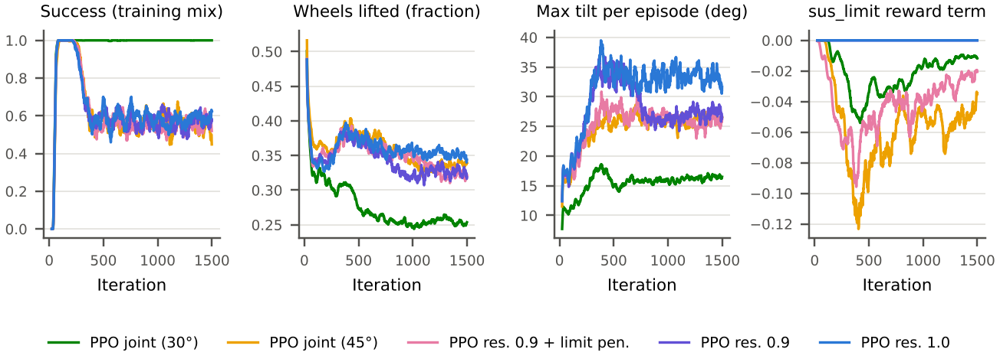
06평가 방법과 지표
- 경사를 한 각도로 고정하고(20, 25, 30, 35, 40, 45°), 지형 단계도 최고 단계로 고정합니다.
- 로버 1,024대를 동시에 출발시키고 각자 첫 에피소드만 셉니다. 경사 832개 + 평지 192개.
- 마찰과 질량 랜덤화는 끄고 기준값(정마찰 0.90, 동마찰 0.70)을 씁니다. 평가 시드는 학습 시드와 다릅니다.
- 성공: 40초 안에 6.5 m 도달(로버 전체가 정상 위). 전복: 롤 50° 또는 기울기 85° 초과.
- 성공률 832개 기준 95 % 신뢰구간은 50 % 근처에서 ±3.4 %p, 0 %나 100 % 근처에서는 ±0.5 %p 이하입니다.
- 보조 지표: 바퀴 들림(접지력이 정적 하중의 10 % 미만인 시간), 차체–지면 접촉 시간(차체 접촉력 1 N 초과), 바퀴 미끄러짐(바퀴 둘레 속도와 차체 속도 차이 ÷ 명령 속도), 하중 편차 load_cv(네 바퀴 접지력의 표준편차 ÷ 평균). 모두 매 제어 주기 값을 에피소드 평균한 것입니다.
- “고정 자세”는 정책 대신 관절 명령을 상수로 넣은 것입니다. 기본 자세(0, 0, 0, 0)가 “고정 서스펜션”입니다.
07결과 한눈에 — 경사각별 성공률

| 경사 | 고정 서스펜션 성공 · 거리 · 시간 | PPO joint (45° 학습) 성공 · 거리 · 시간 | 고정 heave 1.0 | PPO res. 1.0 |
|---|---|---|---|---|
| 20° | 100 % · 6.50 m · 20.9 s | 100 % · 6.50 m · 20.8 s | — | — |
| 25° | 93.8 % · 6.45 m · 29.2 s | 100 % · 6.50 m · 20.4 s | — | — |
| 27.5° | 38.6 % | — | — | — |
| 30° | 0.8 % · 5.19 m · — | 100 % · 6.50 m · 20.9 s | 100 % | 100 % |
| 32.5° | — | 시드 1~4: 100 / 99.9 / 100 / 100 % | 100 % | — |
| 35° | 0.0 % · 4.99 m | 55.8 % · 5.98 m · 33.7 s (시드 4개 평균 66.2 ± 25.5 %) | 69.2 % | 48.0 ± 10.0 % (시드 3개) |
| 37.5° | — | 시드 1~4: 모두 0 % | 0 % | — |
| 40° | 0 % · 1.73 m · 전복 81 % | 0 % · 1.77 m · 전복 22 % | 0 % · 전복 100 % | 0 % · 전복 100 % |
| 45° | 0 % · 1.45 m · 전복 100 % | 0 % · 1.46 m · 전복 100 % | — | — |
거리는 평균 도달 거리, 시간은 성공한 에피소드의 도달 시간 중앙값입니다. 성공률이 무너지는 지점이 두 군데 보입니다. 25°→30°(고정 서스펜션)와 35°→40°(모든 제어기). 둘은 원인이 다르고, 이 노트의 나머지는 그 “왜”를 하나씩 확인한 과정입니다.
벽의 위치를 좁히려고 27.5°, 32.5°, 37.5°를 추가로 평가했습니다.
- 배 걸림 벽은 25~30° 사이에서 급하게 옵니다. 고정 서스펜션은 25° 93.8 % → 27.5° 38.6 % → 30° 0.8 %입니다. 능동 서스펜션은 32.5°까지 모두 100 %입니다.
- 마찰 벽은 35~37.5° 사이입니다. 32.5°에서 모두 100 %, 37.5°에서 모두 0 %입니다. 평가 동마찰 0.70의 한계각 arctan 0.70 = 35.0°와 정확히 겹칩니다. 35°는 한계 바로 위라 바퀴가 한 번 미끄러지면 회복이 어렵고, 그래서 제어기 차이가 드러나는 유일한 각도입니다.
- 정리하면 능동 서스펜션은 오를 수 있는 경사를 약 27° → 35°로 넓히고, 그 위는 마찰이 막습니다. 시드 간 차이와 단계별 전략의 효과는 모두 35° 한 곳에서만 나타납니다.
08왜 1 — 고정 서스펜션은 왜 30°에서 멈추나: 배 걸림
영상으로 보면
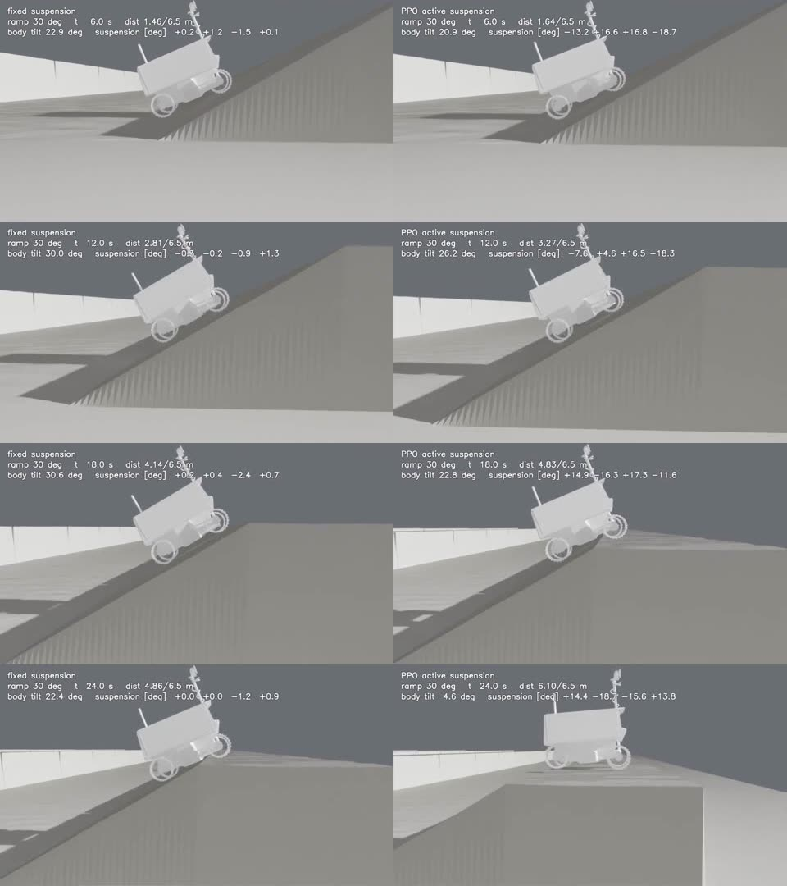

숫자로 보면
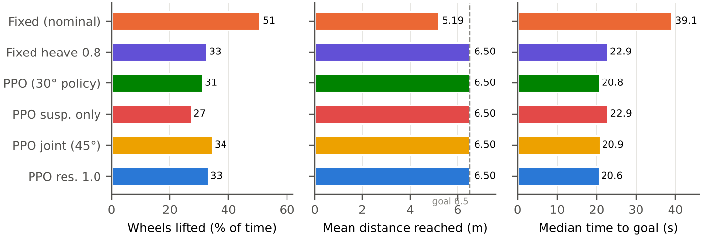
바퀴가 뜬 비율이 다른 제어기보다 1.5배 이상 높다는 게 핵심 증거입니다. 미끄러져서 실패했다면 바퀴는 땅에 붙어 헛돌고 있어야 합니다. 그런데 고정 서스펜션은 바퀴가 공중에 떠 있었습니다. 차체 무게가 하부 돌출부를 통해 정상 모서리에 실리면서 바퀴가 땅을 누르지 못한 겁니다.
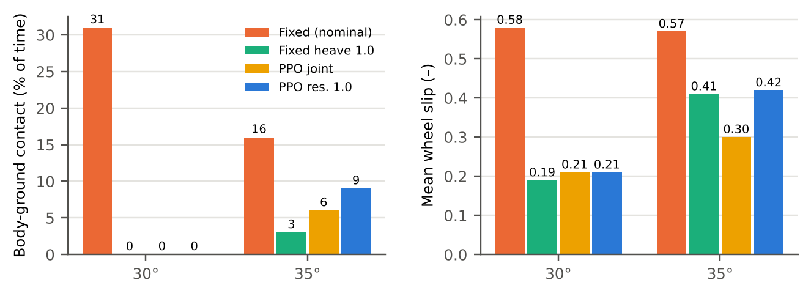
바퀴 들림은 간접 증거였다면, 차체 접촉 시간은 배 걸림을 직접 잰 값입니다. 30°에서 고정 서스펜션은 31 %, 차체를 든 제어기는 모두 0 %입니다. 이때 바퀴 미끄러짐도 고정 서스펜션이 0.58로 다른 제어기(0.19~0.21)의 3배인데, 차체가 걸린 채로 바퀴만 헛돌았기 때문입니다.
기하로 보면
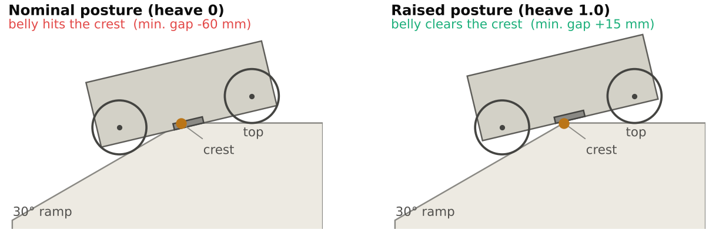
정상 모서리를 넘는 동안 로버의 앞바퀴와 뒷바퀴는 서로 다른 면에 있습니다. 경사가 가파를수록 두 면의 각도 차이가 커지고, 두 바퀴 사이 차체 가운데가 모서리에 더 가까이 내려옵니다. 차량 공학에서는 이걸 breakover angle(램프 브레이크오버 각)이라고 부릅니다. 휠베이스가 길고 지상고가 낮을수록 작아집니다.
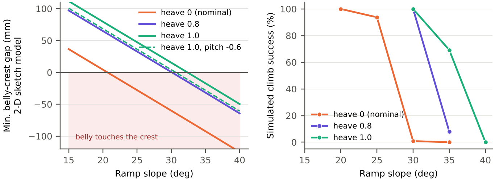
스케치 모델에 대해 — 바퀴 두 개, 강체 차체, 길이 0.35 m 하부 돌출부만 있는 2-D 모델입니다. 서스펜션을 펴면 차체가 “팔 길이 0.22 m × sin(관절각)”만큼 올라간다고 가정했고, 바퀴 침하·미끄러짐·차체 기울어짐은 없습니다. 그래서 절대값은 시뮬레이션보다 보수적입니다(기본 자세가 스케치에서는 21° 근처부터 닿지만, 시뮬레이션은 25°에서 93.8 % 성공). 이 그림은 “높이를 올리면 왜 더 가파른 정상을 넘는가”를 보여 주는 용도이고, 성공률을 예측하는 모델이 아닙니다.
PPO가 이 문제를 푸는 방식도 같은 방향입니다. Photo 1에서 PPO는 정상에 다가가며 네 관절을 모두 펴서 차체를 들어 올립니다. 보상 함수에 “정상에서 차체를 들어라”는 항은 없습니다. 차체가 땅에 닿으면 벌점(body_contact), 바퀴가 뜨면 벌점(lift_off), 못 가면 보상이 없는(progress) 구조에서 정책이 스스로 찾은 행동입니다.
30°에서 추가로 확인한 것
| 30° 제어기 | 성공 | 시간 | 기울기 p95 | 바퀴 들림 | 평지 기울기 p95 |
|---|---|---|---|---|---|
| 고정 서스펜션 | 0.8 % | 39.1 s (성공 7건) | 30.9° | 51 % | 0.8° |
| 고정 heave 0.8 | 100 % | 22.9 s | 31.0° | 33 % | 0.9° |
| PPO joint, 30° 커리큘럼 | 100 % | 20.8 s | 26.3° | 31 % | 6.0° |
| PPO 서스펜션만 (바퀴 속도 고정) | 100 % | 22.9 s | 27.1° | 27 % | 5.0° |
| PPO joint, 45° 커리큘럼 | 100 % | 20.9 s | 29.8° | 34 % | 7.6° |
| PPO res. 1.0 | 100 % | 20.6 s | 31.3° | 33 % | 1.5° |
- 30°는 높이만 올려도 넘는다. 고정 heave 0.8도 100 %입니다. 30°의 벽은 순수하게 지상고 문제라는 뜻입니다.
- 바퀴 제어는 속도를 준다. 서스펜션만 쓰는 PPO도 100 %지만 22.9 s, 바퀴까지 쓰는 PPO는 20.6~20.9 s입니다.
- 30° 정책은 차체를 경사보다 덜 기울인다. 30° 커리큘럼 정책의 기울기 p95는 26.3°로 경사(30°)보다 작습니다. 경사 위에서 앞을 내리고 뒤를 올려 차체를 수평 쪽으로 세운 겁니다(pitch 자세). 대신 이 습관이 평지까지 남아 평지 기울기가 6.0°입니다(12장).
09왜 2 — 40° 이상은 왜 아무도 못 오르나: 마찰 한계
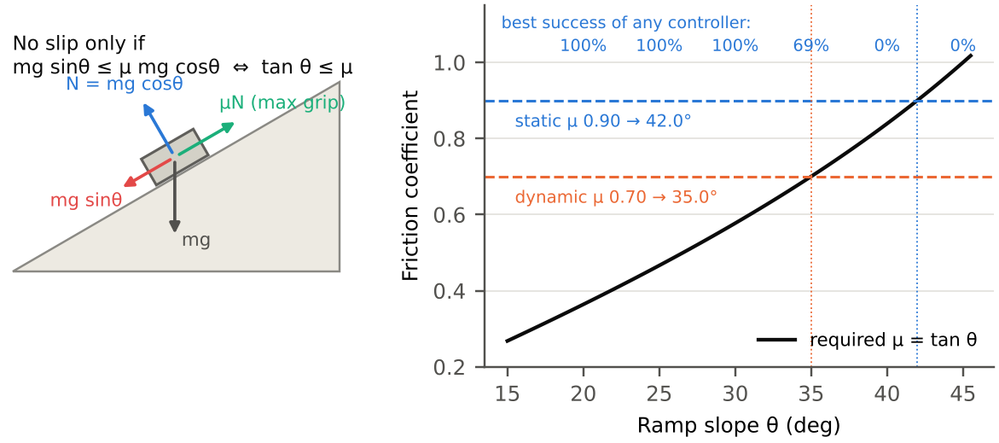
- 동마찰 0.70 → 35.0°. 바퀴가 이미 조금이라도 미끄러지기 시작하면 이 각도부터 계속 밀려 내려갑니다.
- 정마찰 0.90 → 42.0°. 미끄러지기 전 버틸 수 있는 이론상 절대 한계입니다.
이 식에는 차체 자세가 없습니다. 서스펜션으로 높이를 바꾸든 기울기를 바꾸든 바퀴와 땅 사이 마찰계수는 그대로라서, 40°와 45°에서는 어떤 제어기도 0 %입니다. 35°는 정확히 동마찰 한계라 일부만 성공하고, 성공한 경우도 도달 시간이 31~37초로 30°(약 21초)보다 50 % 이상 느립니다. 바퀴가 미끄러지면서 겨우 올라간 겁니다. Fig. 5b도 같은 이야기를 합니다. 차체를 든 제어기들의 미끄러짐은 30°에서 0.19~0.21인데 35°에서는 0.30~0.42로 커집니다. 35°에서는 배 걸림보다 미끄러짐이 주된 문제로 넘어간 겁니다.
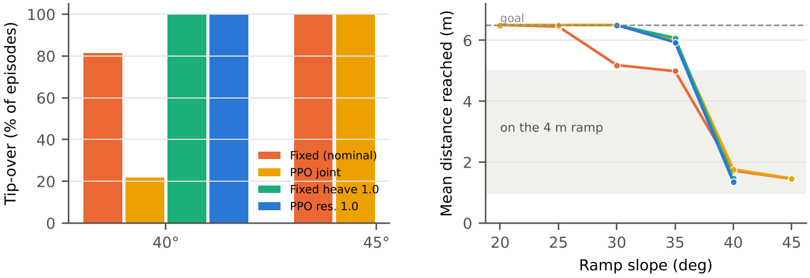
실패 위치가 원인을 말해 줍니다. 배 걸림은 정상(약 5 m)에서, 마찰 한계는 경사 초입(1.5 m 안팎)에서 일어납니다. 40°에서 고정 서스펜션은 81 %가 뒤로 넘어졌는데, 관절 직접 제어 PPO는 22 %만 넘어졌습니다. 올라가지는 못해도 넘어지지 않게 버티는 법은 배운 셈입니다. 반대로 차체를 최대로 든 자세(heave 1.0, PPO res. 1.0)는 무게중심이 높아져 40°에서 100 % 넘어졌습니다.
1035° — 자세를 고정하면 어떨까
35°에서 PPO(관절 직접 제어)는 55.8 %였습니다. 서스펜션을 특정 자세로 고정하면 어떻게 되는지 보려고, heave 4단계 × pitch 3단계 = 12개 자세를 고정한 채 35°를 평가했습니다.

| heave \ pitch | 0.0 | −0.3 | −0.6 |
|---|---|---|---|
| 0.4 | 0.0 % · 4.98 m | 0.1 % · 4.96 m | 0.0 % · 4.94 m |
| 0.6 | 0.2 % · 5.01 m | 0.0 % · 4.97 m | 0.1 % · 4.97 m |
| 0.8 | 8.1 % · 5.18 m | 8.7 % · 5.16 m | 3.4 % · 5.05 m |
| 1.0 | 69.2 % · 6.08 m | 45.8 % · 5.73 m | 18.4 % · 5.32 m |
- heave 0.6 이하는 전부 5 m 근처에서 멈춘다. 35°에서도 1차 벽은 배 걸림입니다. 높이를 끝까지 올려야 그 벽을 넘을 기회가 생깁니다.
- pitch는 손해다. 앞을 숙이면 경사 위에서 차체가 수평에 가까워지지만, 정상에서는 앞쪽 지상고가 줄어 하부 돌출부가 더 쉽게 걸립니다(Fig. 7 왼쪽 점선).
- heave 1.0에서도 31 %는 실패한다. 35°는 마찰 한계라서, 배 걸림을 피해도 미끄러짐이 남습니다(Video 2).
11왜 3 — PPO는 왜 차체를 끝까지 못 들었나: 벌점
보상 함수에는 서스펜션 관절각이 0.32 rad(약 18.3°)를 넘으면 벌점을 주는 항(sus_limit, 가중치 0.5)이 있었습니다. 관절 한계(±20°)에 부딪히지 말라는 안전장치였는데, 35°의 정답(heave 1.0 = 0.35 rad)이 정확히 그 벌점 구간 안에 있었습니다.
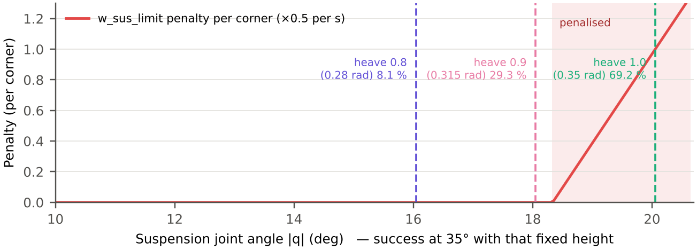
관절 직접 제어 PPO의 학습 곡선(Fig. 4b 오른쪽)을 보면, sus_limit 항은 학습 초반 −0.12까지 내려갔다가 정책이 관절을 덜 펴는 쪽으로 바뀌면서 −0.04 근처로 돌아옵니다. 정책이 벌점을 피하려고 높이를 포기한 흔적입니다. 이 가설을 확인하려고 세 단계로 실험했습니다. 모두 모드 + residual 구조(03장)입니다.
- 기본 높이 0.9 + 벌점 유지 → 35°에서 0.7 %. 기본 자세(0.315 rad)가 이미 벌점 경계 바로 앞이라, 정책이 높이를 더 올리지 못하고 오히려 낮추는 쪽으로 학습됐습니다. 평균 도달 거리 4.49 m로 같은 높이의 고정 자세(5.52 m)보다도 못 갔습니다.
- 기본 높이 0.9 + 벌점 제거 → 36.9 %. 벌점만 뺐더니 0.7 % → 36.9 %, 같은 높이 고정 자세(29.3 %)보다 높아졌습니다.
- 기본 높이 1.0 + 벌점 제거 → 시드 1·2·3이 59.5 / 43.5 / 41.0 %(평균 48.0 ± 10.0 %). 최대 높이 고정 자세(69.2 %)보다 낮고, 관절 직접 제어 PPO(55.8 %, 시드 1개)와의 우열은 아직 가릴 수 없습니다.

| 35° | 성공 | 거리 | 시간 | 바퀴 들림 | 평지 기울기 |
|---|---|---|---|---|---|
| 고정 서스펜션 | 0.0 % | 4.99 m | — | 47 % | 0.9° |
| 고정 heave 0.9 | 29.3 % | 5.52 m | 31.2 s | 44 % | 1.0° |
| 고정 heave 1.0 (격자 탐색 최적) | 69.2 % | 6.08 m | 31.3 s | 40 % | 1.0° |
| PPO joint (45° 커리큘럼, 시드 1) | 55.8 % | 5.98 m | 33.7 s | 36 % | 7.6° |
| PPO joint (시드 2) | 35.0 % | 5.58 m | 32.8 s | 39 % | 2.6° |
| PPO joint (시드 3) | 88.0 % | 6.35 m | 29.1 s | 36 % | 4.1° |
| PPO joint (시드 4) | 86.2 % | — | 30.8 s | — | — |
| PPO res. 0.9 + 벌점 | 0.7 % | 4.49 m | 39.4 s | 35 % | 2.2° |
| PPO res. 0.9 | 36.9 % | 5.77 m | 37.4 s | 36 % | 2.0° |
| PPO res. 1.0 (시드 1) | 59.5 % | 5.93 m | 31.4 s | 40 % | 1.5° |
| PPO res. 1.0 (시드 2) | 43.5 % | 5.78 m | — | 38 % | 1.4° |
| PPO res. 1.0 (시드 3) | 41.0 % | — | — | — | 1.3° |
같은 설정을 시드만 바꿔 세 번 학습했더니 35° 성공률이 59.5 / 43.5 / 41.0 %(평균 48.0 ± 10.0 %)로 나왔습니다. 시드 1이 유난히 좋았던 셈입니다. 평가 오차(±3.4 %p)보다 훨씬 큰 차이라, 이건 평가가 아니라 학습 결과 자체가 시드마다 다르다는 뜻입니다. 반면 30° 100 %와 평지 기울기(1.3~1.5°)는 세 시드가 모두 같았습니다. 35°는 동마찰 한계와 같은 각도라 작은 행동 차이가 “넘느냐 미끄러지느냐”로 크게 갈리고, 학습 커리큘럼도 36° 근처에서 멈춰 이 경계를 얼마나 연습했는지가 정책마다 달랐던 것으로 봅니다. 최적 고정 자세(69.2 %)와 비교할 때 기억할 차이 두 가지가 있습니다.
- 69.2 % 자세는 35°라는 시험 각도를 알고 12개 중에서 고른 것입니다. PPO는 15~45° 전체와 랜덤 마찰에서 평균적으로 잘하도록 학습됐습니다.
- 35°에서는 “높이를 최대로”가 거의 유일한 답이라, 정책이 상황에 따라 자세를 바꾸는 능력을 보여 줄 여지가 작습니다. 같은 heave 1.0이 40°에서는 전복 100 %로 오히려 위험했던 것(09장)처럼, 고정 자세 하나가 모든 상황에 맞지는 않습니다.
residual 정책이 최적 고정 자세에 진 이유 (가설)
| 35° | 성공 | 차체 접촉 | 미끄러짐 | 하중 편차 load_cv |
|---|---|---|---|---|
| 고정 서스펜션 | 0.0 % | 16 % | 0.57 | 1.27 |
| 고정 heave 1.0 | 69.2 % | 3 % | 0.41 | 1.15 |
| PPO joint | 55.8 % | 6 % | 0.30 | 1.09 |
| PPO res. 1.0 (시드 1) | 59.5 % | 9 % | 0.42 | 1.15 |
- 하중 분배는 원인이 아니었다. “네 바퀴를 고르게 누르면 마찰 한계 근처에서 더 버틸 것”이라는 가설로 하중 편차를 쟀지만, 고정 heave 1.0과 residual 정책이 1.15로 같았습니다. 값이 모두 1을 넘는 건 바퀴 돌기(그루서)가 약한 달 중력에서 땅을 튕기듯 닿아 접지력이 순간적으로 크게 흔들리기 때문이라, 이 지표는 노이즈가 커서 차이를 가려내기 어렵습니다.
- residual 정책은 차체를 오히려 낮춘다. 같은 최대 높이(heave 1.0)에서 출발했는데 차체 접촉이 9 %로 고정 자세(3 %)의 3배입니다. 정책이 heave를 빼서 차체를 낮추는 순간이 있고, 그때 배가 닿는 것으로 보입니다. 성공률 차이를 설명하는 가장 유력한 원인입니다.
- 바퀴 속도 조절은 관절 직접 제어 정책이 더 잘 배웠다. PPO joint의 미끄러짐이 0.30으로 가장 낮습니다.
그래서 heave를 1.0에 묶고 정책은 pitch·roll·twist와 바퀴만 조절하게 하는 실험을 했습니다. “높이를 깎아서 졌다”가 맞다면 69.2 % 근처까지 올라와야 합니다. 결과는 14.4 %(시드 1개)로 오히려 크게 떨어졌습니다. 가설은 틀렸습니다. 높이를 최대로 묶어 두어도, 정책이 덧붙인 앞뒤 기울기(pitch) 같은 자세 변화가 정상에서 지상고를 깎아 손해가 된 것으로 보입니다. 자세 히트맵(Fig. 2)에서 pitch를 섞으면 성공률이 떨어진 것과 같은 방향입니다. 그런데 바로 다음 장에서 보듯, 같은 pitch를 “언제 쓰느냐”를 배운 정책은 결과가 정반대였습니다.
11+PPO가 최적 고정 자세를 넘은 경우 — 단계별 자세 전략
관절 직접 제어 PPO를 시드 4개로 학습했더니 35° 성공률이 35.0 / 55.8 / 88.0 / 86.2 %로 두 그룹으로 갈렸습니다. 시드 3·4는 최적 고정 자세(69.2 %)를 17~19 %p 넘었습니다. 무엇이 다른지 같은 출발 조건에서 영상으로 비교했습니다.
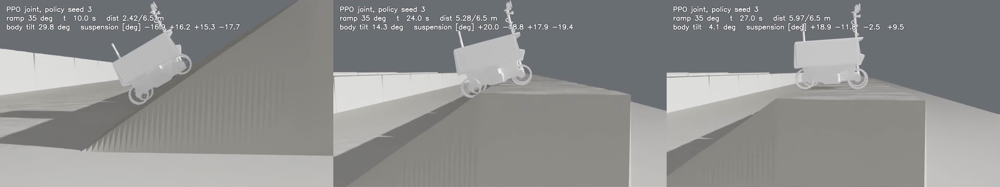
| 구간 (시드 3, 35°) | 시점 | 서스펜션 (부호 맞춤) 앞 / 뒤 | 차체 기울기 | 하는 일 |
|---|---|---|---|---|
| ① 경사 오르기 | 10~18 s | −15~−17° / +15~+18° | 약 30° | 앞을 낮추고 뒤를 올려 차체를 경사(35°)보다 수평 쪽으로 세움 |
| ② 정상 넘기 | 24 s | +18~+20° / +18~+19° | 14° | 네 관절을 모두 최대로 펴서 지상고 확보 |
| ③ 정상 위 | 27 s | +19°, +12° / −2°, −10° | 4° | 뒤를 풀면서 다시 수평 쪽으로 |
고정 자세는 둘 중 하나만 할 수 있습니다. 앞을 숙인 pitch 자세는 경사 위에서 차체를 세워 주지만 정상에서 앞쪽 지상고를 깎아 걸리고, 최대 높이(heave 1.0)는 정상은 잘 넘지만 경사 위에서 차체가 35°로 다 기울어집니다. 시드 3 정책은 경사에서는 pitch, 정상에서는 heave로 전환해 두 장점을 모두 가져갔습니다. 높이를 묶은 실험(14.4 %)이 실패한 것도 같은 이유로 설명됩니다. 정상에서 높이를 끝까지 쓰면서 pitch는 경사에서만 써야 하는데, 그 “전환”을 할 수 없는 구조였습니다.
| 35° | 성공 | 거리 | 시간 | 차체 접촉 | 미끄러짐 | 평지 기울기 |
|---|---|---|---|---|---|---|
| PPO joint 시드 1 | 55.8 % | 5.98 m | 33.7 s | 6 % | 0.30 | 7.6° |
| PPO joint 시드 2 | 35.0 % | 5.58 m | 32.8 s | 12 % | 0.44 | 2.6° |
| PPO joint 시드 3 | 88.0 % | 6.35 m | 29.1 s | 4 % | 0.32 | 4.1° |
| PPO joint 시드 4 | 86.2 % | — | 30.8 s | 5 % | 0.35 | — |
| 고정 heave 1.0 | 69.2 % | 6.08 m | 31.3 s | 3 % | 0.41 | 1.0° |
| 원래 관절 값 (FL FR RL RR) | 시드 3 | 시드 4 |
|---|---|---|
| ① 경사 중간 (13.5 s) | −18.8 +15.6 +9.8 −17.9 | −17.4 +11.6 +18.0 −18.5 |
| ② 정상 (22.5 s / 25.5 s) | +18.0 −15.1 +17.3 −18.8 | +17.8 −18.8 +18.8 −18.2 |
| ③ 정상 위 (28.5 s / 30.9 s) | +18.6 −16.8 −2.2 +4.6 | +19.0 −6.0 +12.2 −0.1 |
- 시드 3은 미끄러짐이 적고(0.32 vs 0.41) 빠릅니다(29.1 vs 31.3 s). 경사에서 차체를 세운 자세가 바퀴 하중을 더 유리하게 나누는 것으로 보입니다.
- 시드 2는 차체 접촉이 12 %로 가장 많습니다. 정상에서 높이를 충분히 쓰지 못한 정책입니다.
- 시드 4개 중 2개가 이 수준(86~88 %)에 도달했고, 두 정책은 같은 3단계 전략을 독립적으로 찾았습니다(Video 7). 결과가 “전략을 찾은 정책(86~88 %)”과 “못 찾은 정책(35~56 %)”으로 갈립니다. 그래서 정확한 결론은 “PPO는 고정 자세로는 불가능한 단계별 전략을 약 절반의 시드에서 찾아내고, 찾으면 최적 고정 자세를 크게 넘는다(평균 66.2 ± 25.5 %)”입니다. 시드 3 정책은 25°·30°에서 100 %, 40°에서 0 %로, 마찰 한계를 넘는 각도는 이 전략으로도 넘지 못합니다.
12평지에서 기울어진 차체

서스펜션 각도(+16.5 −18.4 −11.6 +12.0)를 좌우 부호까지 맞춰서 보면 앞쪽 두 개는 약 +17°, 뒤쪽 두 개는 약 −12°입니다. 앞뒤가 반대인 pitch 자세입니다. 경사 위에서 차체를 수평 쪽으로 세워 주던 자세를 평지에서도 그대로 유지한 겁니다. 평지만 달리는 평가에서도 관절 직접 제어 PPO는 기울기 p95가 6.0~7.6°였습니다(고정 서스펜션 0.8~0.9°).
이유는 두 가지로 봅니다.
- 정상 이후를 배울 기회가 없었다. 목표(6.5 m)에 닿는 순간 에피소드가 끝나서, 정상 위 평지에서 다시 수평을 맞추는 구간이 학습에 없었습니다.
- 관절 공간에서는 “한 자세로 버티기”가 쉬운 지역 최적해다. tilt 벌점(−3.0 × 기울기)보다 상황마다 자세를 바꾸는 데 드는 비용(action_rate, ang_rate 등)과 탐색 난이도가 컸던 것으로 보입니다.
모드 + residual 구조(기본 자세 heave 1.0)로 바꾸자 평지 기울기는 1.5°로 줄었습니다. 정책 출력이 0일 때 수평 자세가 되도록 출발점을 바꾼 효과입니다.
13지금까지의 결론
| 경사 구간 | 성패를 정하는 것 | 근거 |
|---|---|---|
| ~25° | 제어 방식과 무관하게 대부분 성공 | 고정 93.8~100 % |
| 30° | 지상고 — 하부 돌출부가 정상에 걸림 | 고정 0.8 %, 차체 접촉 31 %, 바퀴 들림 51 %, 5.19 m 정지 / 높이만 올려도 100 %(차체 접촉 0 %) |
| 35° | 지상고 + 마찰 — 최대 높이 확보 후에도 미끄러짐 | heave 0.6 이하 0 %, 1.0에서 69 %, 미끄러짐 30°의 2배, 도달 시간 31 s 이상 |
| 40° 이상 | 마찰 — tan θ > μ | 모든 제어기 0 %, 경사 초입(1.5 m)에서 정지·전복 |
- 능동 서스펜션 PPO는 고정 서스펜션의 30° 벽(배 걸림)을 스스로 차체를 들어 넘었습니다(0.8 % → 100 %).
- 보상 설계가 학습을 막을 수 있습니다. 안전장치로 넣은 sus_limit 벌점이 최적 자세를 금지했고, 빼자 0.7 % → 36.9 %가 됐습니다.
- 35°에서 관절 직접 제어 PPO는 경사에서 pitch → 정상에서 heave로 바꾸는 단계별 전략을 시드 4개 중 2개에서 찾았고, 찾은 정책은 최적 고정 자세를 넘습니다(86~88 % vs 69.2 %). 평균은 66.2 ± 25.5 %입니다.
- 모드 + residual 구조는 평지 자세를 확실히 고치지만(7.6° → 1.3~1.5°, 세 시드 동일), 35° 성공률은 48.0 ± 10.0 %로 관절 직접 제어보다 낫지 않았습니다. 높이를 묶은 residual은 14.4 %로 더 나빴습니다.
14검증 중인 것과 남은 것
- 시드 — PPO joint는 시드 4개, res. 1.0은 3개, 높이 고정 residual은 1개입니다. 단계별 전략 발견 빈도를 확정하려고 PPO joint 시드 5를 학습할 예정입니다. 발견을 안정적으로 만드는 방법(예: 경사 구간별 보상, 커리큘럼 조정)도 다음 과제입니다.
- 실제 제원 보정 — 바퀴 지름, 휠베이스, 지상고 범위를 NASA 발표 제원에 맞춘 모델로 다시 학습해, 실제 VIPER 범위에서는 몇 도까지 오를 수 있는지 확인할 계획입니다.
- 정상 통과 궤적 — 거리별 서스펜션 각도·차체 각도·바퀴 하중을 기록하는 스크립트가 평가 스크립트와 다른 성공률을 냈습니다(같은 35° PPO에서 6.2 % vs 55.8 %). 같은 조건(로버 256대, 같은 시드)으로 평가 스크립트를 다시 돌리면 59.6 %가 나와, 로버 수가 아니라 궤적 스크립트의 성공 판정 문제로 확인됐습니다. 판정을 고친 뒤 “PPO가 정상 몇 m 앞에서 차체를 들기 시작하는가”를 그래프로 추가할 예정입니다.
- 고정 자세 하나로는 안 되는 과제 — 정상 뒤에 평지 구간을 붙여 “오르고, 넘고, 다시 수평”까지 평가하고, 옆 경사처럼 높이를 최대로 드는 게 위험한(전복) 상황을 추가할 계획입니다.
- 교차 검증 — Isaac Lab 밖의 지형 환경(OmniLRS)에서도 같은 경향이 나오는지.
- 모든 결과는 시뮬레이션이며, 실물 로버나 실제 토양으로 시험한 것이 아닙니다. 서스펜션 구동기 속도 제한(1 rad/s)은 데이터시트 없이 정한 가정값입니다.
15이번에 배운 것
제일 크게 남은 건 “강화학습이 이겼다”보다 “왜 이기고 왜 졌는지”가 더 중요하다는 감각입니다. PPO가 고정 서스펜션을 이긴 이유는 배 걸림이었고, 최적 고정 자세에 진 이유는 내가 넣은 벌점이었습니다. 40° 이상은 아무도 못 오르는 게 오히려 시뮬레이터가 물리적으로 맞게 동작한다는 증거였습니다. 숫자 하나가 이상할 때마다 영상을 다시 보고, 자세를 하나씩 고정해서 재 보고, 실패한 위치와 바퀴 들림 같은 보조 지표로 원인을 좁히고, 가설을 세워 한 가지만 바꿔 다시 학습했습니다. 결과가 기대와 다를 때가 가장 많이 배우는 때였습니다.
수치는 모두 Isaac Sim 5.0 + Isaac Lab 시뮬레이터 내부 계측값이며, PPO joint는 시드 4개, res. 1.0은 시드 3개, 나머지 학습 정책은 시드 1개 기준입니다(Fig. 1·3은 시드 1). Fig. 6·7 왼쪽은 개략 2-D 스케치 모델입니다. 실물 로버·토양 시험 결과가 아닙니다. 마지막 업데이트 2026.11.13 (PPO joint 시드 4 반영).